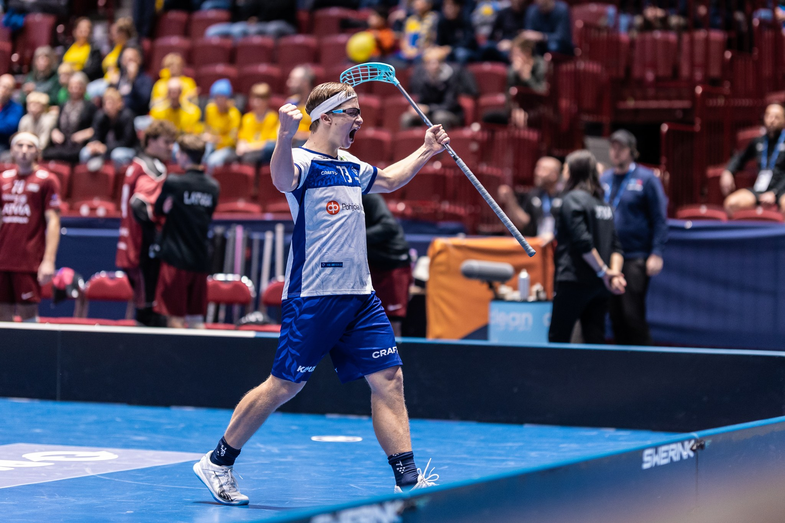
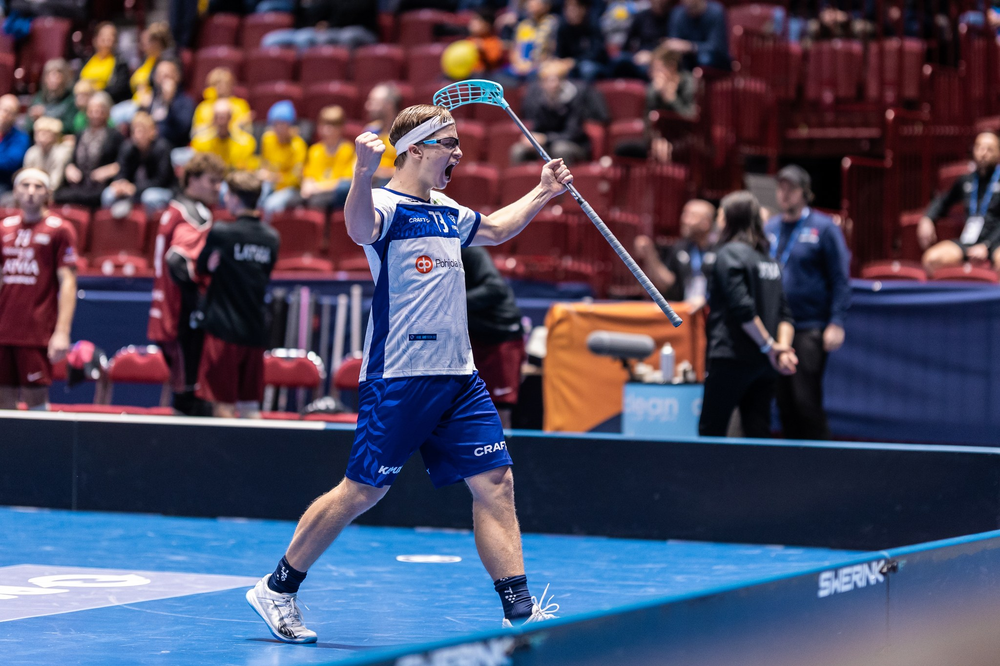

Salibandykenttä on suorakulmion muotoinen sisäpelialusta, jonka mitat
ovat yleensä 20 x 40 metriä.
Kenttää ympäröi noin 50 cm korkuinen laita, joka pitää pallon pelialueella.
Kentällä on keskiviiva, aloituspiste ja kaksi maalialuetta, joiden sisällä sijaitsevat maalit.
Maalialueen ympärillä on puolustaville pelaajille tärkeä maalivahdin alue, johon vain maalivahti saa mennä.
Pelialue on jaettu hyökkäys- ja puolustussuuntaan, ja sen merkinnät helpottavat pelin kulkua ja sääntöjen noudattamista.
Salibandymailan pituus kannattaa valita pelaajan pituuden mukaan,
sillä oikean mittainen maila parantaa pelimukavuutta ja suorituskykyä.
Alle 110 cm pitkille pelaajille suositellaan 55 cm mailaa, kun taas yli 185 cm pitkät hyötyvät 103 cm mailasta.
Mailan pituus kasvaa asteittain pelaajan pituuden mukaan, esimerkiksi 150–165 cm pitkille pelaajille sopii 87 cm maila.
Maila kannattaakin valita oman pituuden mukaan, jotta se tarjoaisi optimaalisimman peliasennon ja mailan hallinnan.
Mutta on mailan voi tietenkin myös valita niin, että se on itselle mahdollisimman mukavan tuntuinen.
Eli kokotaulukko on vain suositus, jonka noudattamista kuitenkin kannattaa harkita.
Tulospalvelu on Salibandyliiton verkkopalvelu, josta löydät ottelu- ja
sarjatulokset, kentät, kalenteri ja muut palvelut.
Sieltä pystyy siis kuka tahansa pelaaja, katsoja, valmentaja tai perhjeenjäsen katsomaan pelaajien ja joukkueiden tilastoja.
Sivustolta löytyy esimerkiksi pelaajien ja maalivahtien pistepörssit, jotka kertovat kuinka monta maalia pelaaja on tehnyt/maalivahti torjunut.
Sarjatulokset näkyvät tulospalvelussa sarjoittain. Kuvassa esimerkki naisten 3-divarin B-lohkon sarjataulukosta, josta näkee mikä joukkue on pärjännyt sarjassa parhaiten.
Tulospalvelusta on myös mahdollista etsiä pelaajia ja joukkueita nimeltä.
Jos seuraa F-liiga joukkeita ja haluaa tietää miten joku pelaaja/joukkue siellä pärjää, niin tulospalvelu on paikka josta nämä
tiedot kannattaa hakea.
Tästä painamalla pääset Tulospalvelun etusivulle


 
